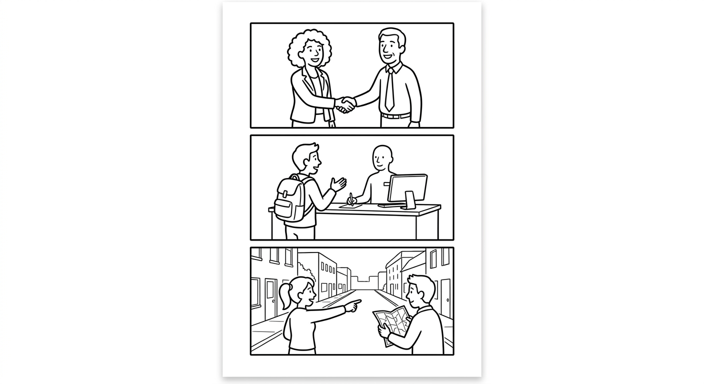

B1 Speaking Mission Exam
Complete two realistic survival-English missions from your course. Your goal is not perfect English. Your goal is to communicate, respond, confirm, and keep the conversation alive. (Complete duas missões realistas do seu curso. Seu objetivo não é o inglês perfeito. Seu objetivo é comunicar, responder, confirmar e manter a conversa viva.)

- The examiner gives you two mission cards. (O examinador entrega dois cartões de missão.)
- You receive about one minute to prepare each card. You may write keywords, not a full script. (Você tem cerca de um minuto para se preparar. Pode anotar palavras-chave, não um texto completo.)
- You complete each roleplay and answer follow-up questions. (Você completa cada situação e responde a perguntas extras.)
- The examiner may say one detail quickly or in a confusing way. Use a repair phrase. (O examinador pode falar um detalhe rápido demais. Use uma frase de socorro.)
- Your individual score is out of 100, even when you test with a partner. (Sua nota é individual, de 0 a 100.)
| Scored area | Points | What it means |
|---|---|---|
| Communication | 30 | Complete the mission and make the main message understandable. |
| Understands and responds | 20 | Answer questions and react to new information. |
| Target language | 20 | Use useful B1 grammar, vocabulary, and survival phrases. |
| Pronunciation and clarity | 15 | Speak clearly enough to be understood. |
| Repair language | 15 | Ask for repetition, clarification, confirmation, or slower speech. |
| Total | 100 | Performance score |
Sorry, can you repeat that? · Can you speak more slowly, please? · What does ___ mean? · Did you say 6 or 7? · Left or right? · So, on Monday at 6:30, right?
A Simple Mission Strategy
- Open: greet the person and say who you are or what you need. (Cumprimente e diga quem você é ou o que precisa.)
- Ask or explain: ask your questions or give your information. (Pergunte ou dê suas informações.)
- Answer: respond to the other person's questions with details. (Responda às perguntas com detalhes.)
- Confirm: repeat the important numbers, times, or directions back. (Repita os números, horários ou direções para confirmar.)
- Repair: if you do not understand, ask for repetition — do not stop. (Se não entender, peça para repetir — não pare.)
Recommended format: one examiner with one student for 6–8 minutes, or one examiner with a pair for 10–12 minutes. Assign two missions per student. At least one must be a confirmation mission (Card 4, 6, or 7), where the candidate must repeat information back and the notes can be compared. Use a different card order for neighboring candidates. While students wait, they complete a written review task in another room.
Consistency: ask two follow-up questions per mission and introduce one repair opportunity across the exam (say one number, time, or direction quickly or unclearly, once). Do not coach, translate the mission language, or supply the target phrase. Procedural instructions ("sente-se aqui", "você tem um minuto") may be given in Portuguese at this level — the mission itself happens in English.
Grading philosophy (from the chapters): listen for message completion first — did the student complete the mission? Then check target language and repair. Do not interrupt errors during the performance. Feedback after the exam can be given in Portuguese.
Meet Someone New
You are at a community event and you meet a new person. Say your name, your city, and if you work or study. Ask the person at least two questions about their life. (Você está em um evento e conhece uma pessoa nova. Diga seu nome, sua cidade e se você trabalha ou estuda. Faça pelo menos duas perguntas.)
Answer naturally with simple facts (name, city, job). Ask: "How old are you?" and "Where are you from?" Mission success (from Chapter 1): the candidate says their name and city, asks at least one question, and finishes the conversation without reading. Listen for am/is/are, WH + to be questions, and one repair phrase if you speak quickly once.
Who Does What at Home
The examiner interviews you about chores. Say two chores you do at home, and say who does two other chores in your family — use he, she, him, her, my, his, her instead of repeating names. (O examinador entrevista você sobre tarefas domésticas. Diga duas tarefas que você faz e quem faz outras duas tarefas na sua família — use os pronomes.)
Ask: "Who cooks in your house?" and "Do you help at home?" plus one follow-up ("Does your brother wash the dishes?"). Mission success (from Chapter 2): the candidate names their own chores and at least two family members' chores using pronouns instead of repeating names. Listen for he/she vs him/her, possessive adjectives, and the always-include-the-subject rule.
A Day in My Life
Describe your normal day — morning, afternoon, and evening — using at least four different verbs. Then answer questions about your family's routine. (Descreva seu dia normal — manhã, tarde e noite — com pelo menos quatro verbos diferentes. Depois responda sobre a rotina da sua família.)
Ask: "What time do you wake up?" and "What time does your mother/brother wake up?" (the second question forces third-person -s). Mission success (from Chapter 3): the candidate describes a full day, morning to night, and remembers the -s with he/she when reporting. Listen for Simple Present forms, do/does in answers, and plural objects (books, keys).
Course Registration Desk
You want to sign up for a course. The examiner is the receptionist. Give your phone number, your address number, and your date of birth clearly. Ask the price and repeat it back to confirm. (Você quer se matricular em um curso. Dê seu telefone, o número da sua casa e sua data de nascimento. Pergunte o preço e repita para confirmar.)
Write down the three numbers the candidate gives you — the comparison of notes at the end is the real test (from Chapter 4). Ask: "What is your phone number?", "What is your date of birth?" Then give an invented price between 100 and 999 reais and require confirmation. Repair opportunity: say the price quickly once. Listen for digit-by-digit phone numbers, hundreds with "and" (three hundred and fifty), ordinals in dates, and years.
My Week and My Things
First, answer questions about your week using frequency adverbs (always, usually, sometimes, never...). Then the examiner points at objects on the table and asks "Whose ___ is this?" — answer with mine, yours, his, hers. (Primeiro, responda sobre sua semana usando advérbios de frequência. Depois o examinador aponta objetos e pergunta de quem são — responda com mine, yours, his, hers.)
Prepare three small objects (pen, notebook, bag) and decide aloud who owns each one ("This is my pen", pointing at the candidate's notebook, etc.) before asking "Whose ___ is this?" three times. Ask two "How often do you...?" / "What do you do on Saturdays?" questions. Mission success (from Chapter 5): the candidate uses at least three different frequency adverbs and answers three "Whose...?" questions with the correct possessive. Listen for adverb position and adjective-vs-pronoun choice (my/mine, her/hers).
When Does It Start?
The examiner is a school secretary. Ask about the days and times of two courses, write the schedule down, and confirm it back at the end ("So, on Monday at 6:30, right?"). (O examinador é o secretário da escola. Pergunte os dias e horários de dois cursos, anote e confirme no final.)
Invent a timetable for two courses (days + start/finish times) and write it down before starting. Answer with "on" for days, "at" for times, "from... to" for periods. Say one time in a confusing way (6:30/7:30) to create the repair opportunity. Mission success (from Chapter 6): the candidate's written schedule matches your invented timetable exactly — compare notes at the end. Listen for at/in/on accuracy and time expressions (half past, quarter to).
Meeting a Friend Downtown
You are a visitor and you are lost. Ask how to get to a place (the market, the health center...), ask if you need a bus, and repeat the route back. Then describe the friend you are going to meet: height, hair, and clothes. (Você é um visitante perdido. Pergunte como chegar a um lugar, se precisa de ônibus, e repita a rota. Depois descreva o amigo que vai encontrar: altura, cabelo e roupas.)
Invent a route with at least three instructions (go straight, turn left/right, cross the street, it's next to / opposite...). Say whether a bus is needed ("Take the number 30 bus") or if it is on foot. Give one instruction quickly to create the repair opportunity ("Left or right?"). Ask one question about the friend's appearance. Mission success (from Chapter 7): the candidate repeats the full route back correctly and gives a description clear enough to recognize the person. Listen for is vs has, "is wearing", by/on foot, and direction phrases.
Individual Speaking Rubric · 100 Points
| Area | Strong | Developing | Limited | Score |
|---|---|---|---|---|
| Communication · 30 | 26–30: completes both missions; main information arrives clearly | 19–25: completes most steps; some support needed | 0–18: isolated words; mission often incomplete | ____ / 30 |
| Understands/responds · 20 | 17–20: answers and reacts to follow-ups appropriately | 12–16: understands core questions with repetition | 0–11: responses are often unrelated or absent | ____ / 20 |
| Target language · 20 | 17–20: useful B1 forms (to be, Simple Present, pronouns, at/in/on, numbers, directions) support meaning consistently | 12–16: some useful target language; errors rarely block meaning | 0–11: very limited range or errors frequently block meaning | ____ / 20 |
| Pronunciation/clarity · 15 | 13–15: understandable, audible, manageable pauses | 9–12: generally understandable with occasional strain | 0–8: clarity frequently blocks understanding | ____ / 15 |
| Repair language · 15 | 13–15: independently asks for repetition, clarification, or confirmation | 9–12: uses at least one useful repair with some prompting | 0–8: gives up or switches to Portuguese without trying repair language | ____ / 15 |
| Total | ____ / 100 |
Before exam day:
- Print candidate cards separately from examiner sheets.
- Brief evaluators with the rubric and score two sample performances together.
- Prepare a quiet station, timer, card rotation, three small objects for Card 5, and a waiting-room review task.
- Decide whether candidates test individually or in pairs; never give a shared score.
Standard examiner script: "Hello. You will complete two short missions in English. You may ask me to repeat or speak more slowly. Mistakes are okay; keep communicating. You have one minute to read your first card and write keywords. Ready?" At this level the same script may first be given in Portuguese: "Você vai completar duas missões curtas em inglês. Pode pedir para eu repetir ou falar mais devagar. Errar é normal; continue se comunicando." After the first mission: "Thank you. Now let's move to the second situation." At the end: "Thank you. The exam is complete."
Fairness rules:
- Use the same number of follow-up questions and repair opportunities for all candidates.
- Do not correct language during the performance — message completion is scored before accuracy.
- Do not lower pronunciation scores for accent; score intelligibility.
- Record observable evidence before choosing a band.
- If two evaluators differ by more than 10 points, review the evidence together.
- Offer an accessible alternative format when a documented need makes the standard procedure inappropriate.
Semester grade: Final grade = (Foundation Test 1 × 0.30) + (Foundation Test 2 × 0.30) + (Speaking Mission Exam × 0.40).